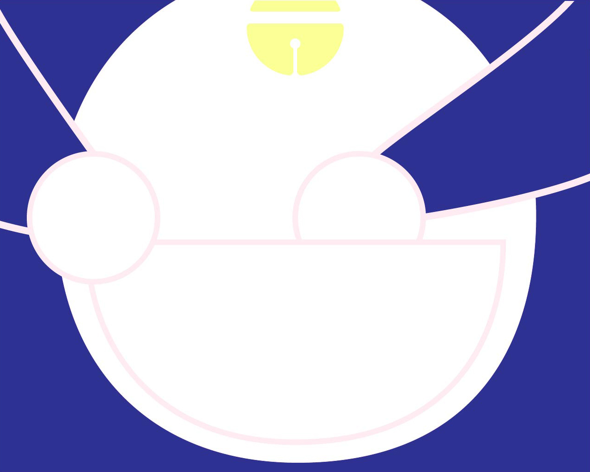
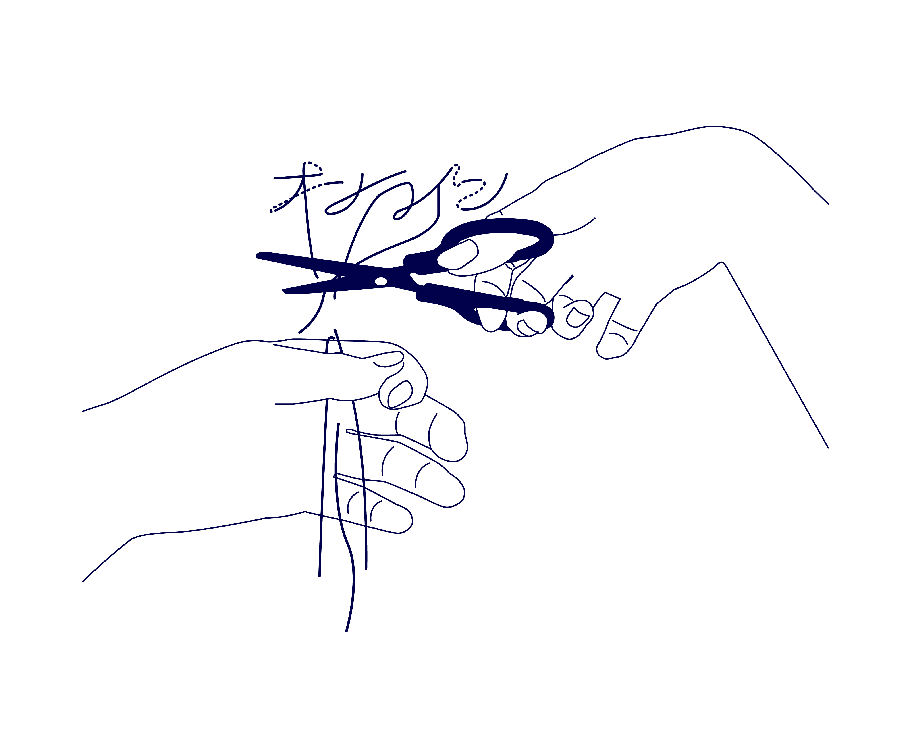

はじめに
一定時間で回復するスマホゲームの体力を漏らさないように、数分おきにスマホをチェック。ついでにツイッターを眺めて、インスタも見ていたら１時間なんてあっという間に過ぎる。Amazonで電子書籍を買い、わからない漢字はそのまま検索画面へ、街で迷った時もグーグルマップ。とりあえずどんな疑問も手元のスマホで大体解決する（家の中ならパソコン）。
私たちにとってネットに繋がっていることは普通のことだ。一番身近な暇つぶしであり、お助けツール、手のひらに収まるドラえもん、それがスマホでありネット。日常的に私をサポートしてくれるこのドラえもんはオフラインになると一気にポンコツになってしまうのだが。

さて、便利なドラえもんがいなくなると、哀れなのび太である私がどうなってしまうのか...。
2018/6/12から6/21の10日間、１日のうちの数時間をオフラインで過ごしてみた。この体験を通してネットが私にとってどんな存在でどう付き合っていけばいいのか改めて考えてみる。
6/12
課題に追われているので、帰宅後も作業。私の予想では、スマホがなければすごく捗るはずだったのだが...。
作業中に聴くBGMも、必要な参考資料もすべてがオンライン状態でしか見られないことに気づいた。
あまりにも不便なので当然ながら作業はまったく進まない、今日ははやめに終わらせることにした。
6/13
昨日の反省を踏まえ、必要な資料はスクリーンショットなどで画像データとして保存しておく。しかし、膨大な数の写真にパソコンの容量が圧迫された。
作業BGMは聞きたいサウンドトラックがiTunesになく、5年ぶりにアマゾンでCDを購入。届くのが楽しみだ。

データをネットを使って管理することで、作品ごとの大量の資料や画像をパソコンの容量を気にすることなく保管できるのが、すごく便利なことだと改めて思った。データ量は増えてしまったけれど、事前に資料を準備しなくてはいけない＝作業前に予定を立てておく必要があるので、利点もあった。この体験が終わった後も作業前に計画を立てことは大事にしたい。
また、CDを久しぶりに買ったことで、スマホじゃなく映画館で映画を見たり、通販サイトじゃなく店舗で買い物に行ったり、、といったアナログな楽しさを感じることができた。
6/14
CDは届いたけど、そういえば私のパソコンには読み取る機能がついてなかった聴けない！！
とりあえず、ずっと買おうと思ってアマゾンのカートに入れっぱなしだった外付けDVDドライブを注文した。
6/15
この検証をしている20:00~22:00の時間は、いつもごはんを食べたりしながらYouTubeで動画を見ていた。
私はテレビの、やたらCMが挟まれて得たい情報が先延ばしにされるのも、たくさんの人が一度に喋っていてうるさいところも苦手でほとんど見ない。
でも、YouTubeはオフラインでは見れないので昨日までの二日間は無言でご飯を食べていた。
さすがに寂しいので友達に電話しようかと思ったが、スマホをオフラインにしていると電話もできない...

ネットがないと一人暮らしの孤独感が増す。
6/16
帰宅後も作業するつもりが、気づいたら寝ていた。
ネットがないと余計な誘惑がないので、調子がいいときは作業が捗るが、集中力が切れた時に気分転換ができないので寝てしまう。
オフラインでの気分転換は何をすればいいんだ...
6/17
今日は昼間に友達と美術館にいった。
美術館を回っている間も、カフェで話している間もスマホでゲームしたりSNSを見たりしなかったので、人といるとネットがないことによる悲壮感がない。
ただ、地図を見たり展覧会の情報を見るのにスマホを使ったので完全なオフラインではない。
6/18
なぜか18日の記憶がない、寝てた..？スマホを見ることが癖になっていたので、一番身近な暇つぶしがネットサーフィンになっていて オフラインの状態での趣味を持っていなかったことに気づいた。
普段はそこまで友人や両親に連絡を取らないし、寂しいとも思わないのに、ネットを見ている時間が空白になったので寂しく感じてしまったようだ。
6/19
課題がおわらないので学校であまりスマホをいじれないし、家に帰るとこの課題でネットを切ってるし、、
ネットサーフィンしたい！無意味に通販サイト眺めたり、インスタでストーリー流し見したい。
6/20,21
20、21日特に書くほどネタがないので、 今までの検証の気づきを。
オフライン状態の利点の一つに、余計な誘惑がないので作業がはかどることが挙げられるが、これによって オンライン状態は誘惑が多く集中しにくいことに気づいた。
逆にオフライン状態での不便な点は、 オンライン上の資料が見れない、 LINE が使えないミニケーションが取りづらい、 暇つぶしに困るなど多く見つかった。
これは私が普段ネット依存気味なので、不満に感じることが多かったのかもしれない。